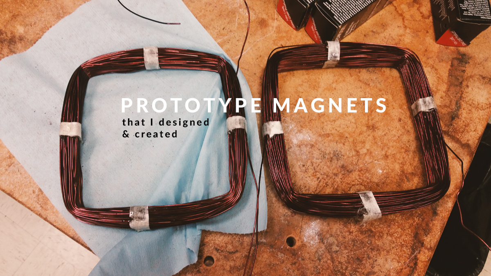

I interned at the Laser Ion Source (LION) at Brookhaven National Laboratory which provides high brightness heavy ion beams for the Relativistic Heavy Ion Collider (RHIC) and the NASA Space Radiation Laboratory (NSRL). Here, plasma containing energetic ions are created by firing pulsed Nd:YAG lasers at a solid metal target.
Fabrication & Sintering of ZrO2 Targets
One of the types of targets used in the LION is Zirconium Dioxide. I helped to make ZrO2 targets by pressing the fine ZrO2 powder into a mold using an oil press, and then sintered the target at 1400°C. We used these targets in laser irradiation experiments to analyze the particle contents.
Photo by Harry Chalfin
Simulation & Fabrication of Magnets for Laser-produced Plasma Guiding
The LION uses two target systems: one which is on-axis and one which is off-axis. The ions collected from the off-axis system is around 50% less than the ions from the on-axis system, thus there is a need to guide the plasma back on-axis. I simulated, designed, and created a pair of transverse coil magnets that are used to correct the trajectory of laser-produced plasma. We ran experiments with these guiding magnets and it showed that they significantly increased the number of ions collected from off-axis targets, in some conditions almost tripling the number of ions.

Cornell University: Newman Laboratory
Spring 2018
High energy electron beams produced at Newman Lab have a tendency to diverge. I worked on a project to design a solenoid that effectively focuses these electron beams (around 60 KeV) with minimal field aberration. I coded a Python script that generates solenoid text files that can be run through the Superfish software and analyzed in Poisson or Pandira. The solenoid parameters such as internal radius, thickness, and iron yoke can be specified by the user.